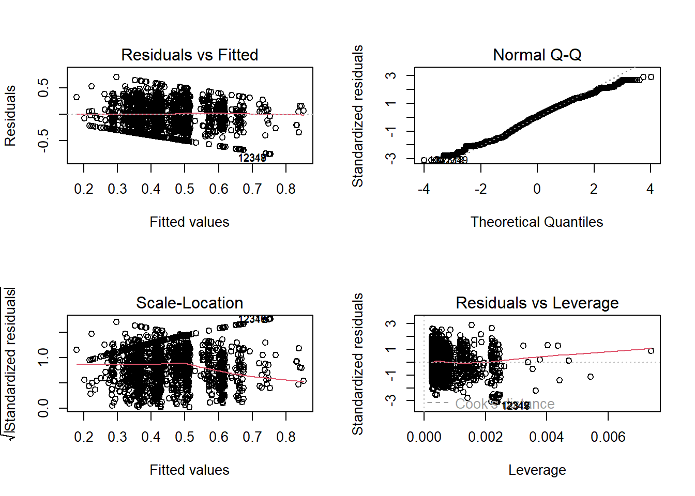
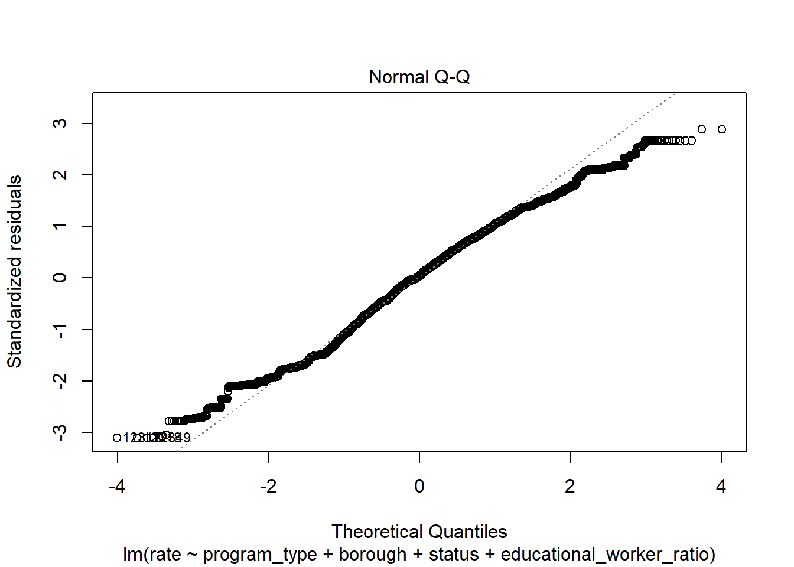
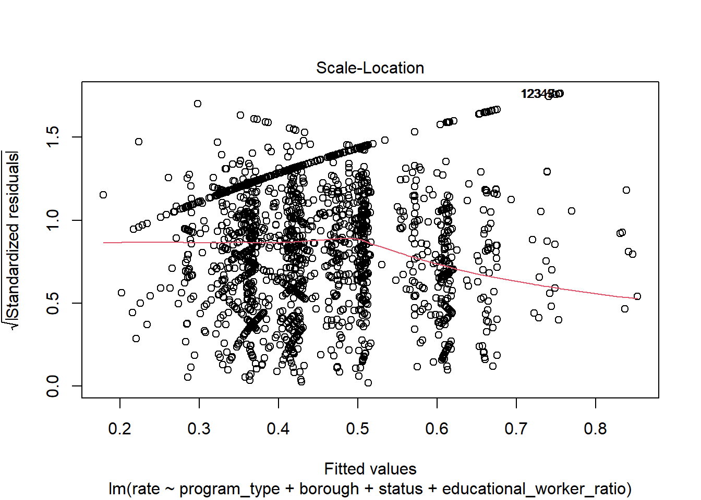
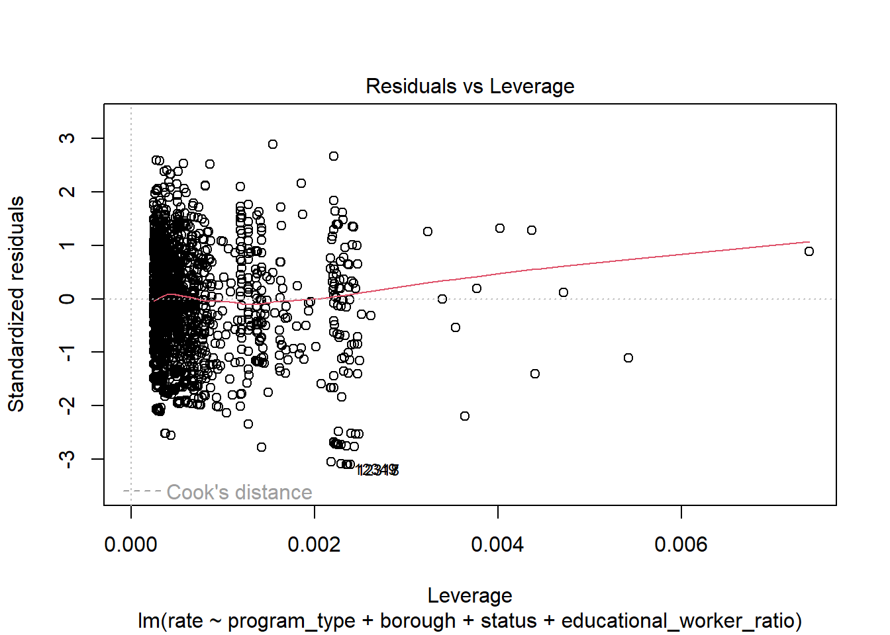
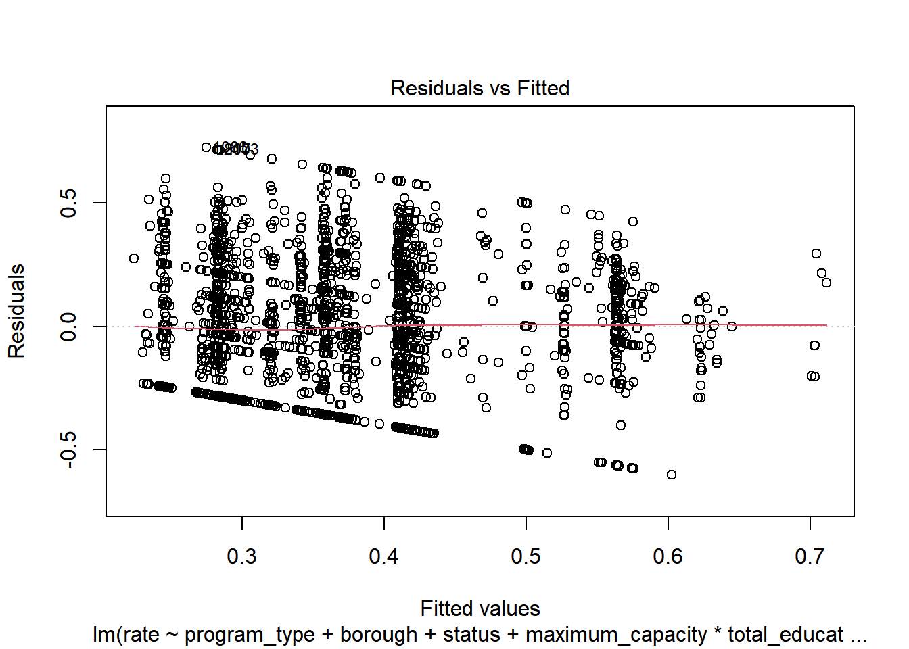

Linear Regression Model
Model selection
To explore the possible predictors contributing to the center-specific violation rate under each program type, we built a linear regression model. In this model, we focused on the violation rate and properties of each individual center.
To start with, we created a new variable named “rate”, which represents the violation rate for each center, by using violation category column. Here, rate = number of total violation for each center and program number of total inspection for each center and program, during the past 3 year. This variable was used as the outcome of the linear regression.
Next, we selected several variables closely related to the properties of each center, as the potential predictors. After a thorough literature review, we chose variables based on a hypothesized structure for the factors underlying violation rate.
library(tidyverse)
library(dplyr)
library(rvest)
library(purrr)
library(ggplot2)
library(modelr)
library(mgcv)
library(patchwork)
library(viridis)
library(fastDummies)
set.seed(1)
childcare_inspection_df = read_csv("./data/DOHMH_Childcare_Center_Inspections.csv") %>%
janitor::clean_names() %>%
distinct()
childcare_inspection_df = childcare_inspection_df %>%
select(center_name, borough, zip_code, status, age_range, maximum_capacity,program_type, facility_type,
child_care_type, violation_category,
violation_status,violation_rate_percent:average_critical_violation_rate,regulation_summary,
inspection_summary_result) %>%
drop_na(zip_code, age_range, violation_rate_percent,public_health_hazard_violation_rate, critical_violation_rate) %>%
filter(maximum_capacity != 0) %>%
mutate(
educational_worker_ratio = total_educational_workers/maximum_capacity,
program_type = tolower(program_type),
facility_type = tolower(facility_type),
borough = as.factor(borough),
status = as.factor(status),
program_type = as.factor(program_type),
facility_type = as.factor(facility_type),
child_care_type = as.factor(child_care_type),
age_range = as.factor(age_range)
) %>%
filter(program_type != "school age camp")
# calculate a new violation rate for each distinct program using violation category column.
center_specific_df = childcare_inspection_df %>%
relocate(center_name, program_type) %>%
group_by(center_name, program_type) %>%
mutate(
n_na = sum(is.na(violation_category)),
n_violation = sum(!is.na(violation_category)),
rate = n_violation/(n_violation + n_na)) %>%
arrange(center_name, program_type)Linear raw model 1
First, we fit a full model using program type, borough, status, educational worker ratio of center-specific distinct records.
raw model 1 named full_lm:
rate = 0.865 - 0.028 * X infant_toddler - 0.245 * X BROOKLYN - 0.186 * X MANHATTAN - 0.104 * X QUEENS - 0.323 * X STATEN_ISLAND - 0.19 * X Expired_In_Renewal - 0.239 * X Permitted - 0.08 * X educational_worker_ratio
Detailed information is as follows:
# select distinct records and related variables of each center
center_distinct_df = center_specific_df %>%
select(center_name, program_type, borough, status, maximum_capacity, total_educational_workers, educational_worker_ratio, rate)
# fit the full model
full_lm = center_distinct_df %>%
lm(rate ~ program_type + borough + status + educational_worker_ratio, data = .)
full_lm %>%
broom::tidy() %>%
knitr::kable(digit = 3)| term | estimate | std.error | statistic | p.value |
|---|---|---|---|---|
| (Intercept) | 0.865 | 0.015 | 57.405 | 0.000 |
| program_typeinfant toddler | -0.028 | 0.011 | -2.425 | 0.015 |
| program_typepreschool | -0.004 | 0.009 | -0.446 | 0.656 |
| boroughBROOKLYN | -0.245 | 0.006 | -42.837 | 0.000 |
| boroughMANHATTAN | -0.186 | 0.006 | -30.364 | 0.000 |
| boroughQUEENS | -0.104 | 0.006 | -17.314 | 0.000 |
| boroughSTATEN ISLAND | -0.323 | 0.010 | -32.284 | 0.000 |
| statusExpired-In Renewal | -0.190 | 0.012 | -15.804 | 0.000 |
| statusPermitted | -0.239 | 0.011 | -21.128 | 0.000 |
| educational_worker_ratio | -0.083 | 0.015 | -5.342 | 0.000 |
Linear model 2
We also proposed an alternative model by using maximum_capacity, total educational workers and their interaction term as the predictors, instead of the educational worker ratio.
raw model 2 named alt_lm:
rate = 0.842 - 0.041 * X infant_toddler - 0.248 * X BROOKLYN - 0.187 * X MANHATTAN - 0.106 * X QUEENS - 0.329 * X STATEN_ISLAND - 0.182 * X Expired_In_Renewal - 0.231 * X Permitted
Detailed information is as follows:
# fit an alternative model
alt_lm = center_distinct_df %>%
lm(rate ~ program_type + borough + status + maximum_capacity * total_educational_workers, data = .)
alt_lm %>%
broom::tidy() %>%
knitr::kable(digit = 3)| term | estimate | std.error | statistic | p.value |
|---|---|---|---|---|
| (Intercept) | 0.842 | 0.017 | 51.008 | 0.000 |
| program_typeinfant toddler | -0.041 | 0.012 | -3.432 | 0.001 |
| program_typepreschool | -0.006 | 0.011 | -0.558 | 0.577 |
| boroughBROOKLYN | -0.248 | 0.006 | -43.482 | 0.000 |
| boroughMANHATTAN | -0.187 | 0.006 | -30.447 | 0.000 |
| boroughQUEENS | -0.106 | 0.006 | -17.709 | 0.000 |
| boroughSTATEN ISLAND | -0.329 | 0.010 | -32.970 | 0.000 |
| statusExpired-In Renewal | -0.182 | 0.012 | -15.258 | 0.000 |
| statusPermitted | -0.231 | 0.011 | -20.568 | 0.000 |
| maximum_capacity | 0.000 | 0.000 | 2.558 | 0.011 |
| total_educational_workers | 0.000 | 0.000 | 0.191 | 0.849 |
| maximum_capacity:total_educational_workers | 0.000 | 0.000 | -0.648 | 0.517 |
After comparing these two models, we decided to keep full_lm model, due to its better goodness of fit and lower correlation among variables.Moreover, our key predictors related to maximum capacity and educaitonal workder only show up in the former model.
Model diagnostics
Residual assumptions
We checked the assumptions of the residuals by using 4 plots as follows:
Linearity and homoscedasticity: from the Residuals vs Fitted plot, we can see residuals form a horizontal ‘band’ around zero and its value evenly dispersed around this reference line, suggesting the variance of our residuals should be constant across all fitted values.
Normality: from the Normal QQ plot, we can see a straight line with small departures if we don’t consider cases 12349 and 12318, suggesting the residuals follows a normal distribution.
Equal variance: again, from the Scale_Location plot, we can see a horizontal line with roughly equally spread points, suggesting the residuals are spread equally along the range of the predictors.
Outliers: from the Residuals vs Leverage plot, we can see no case is outside of the dashed line of Cook’s distance 0.5, suggesting no influential observations.
# model diagnostics: Residuals vs Fitted plot, QQ plot, Scale_location, Residuals vs Leverage
plot(full_lm)
Multicollinearity
Moreover, the full_lm model shows a low multicollinearity since the VIF value for each variable are all below 2.
library(performance)
check_collinearity(full_lm) # low correlation## # Check for Multicollinearity
##
## Low Correlation
##
## Term VIF VIF 95% CI Increased SE Tolerance
## program_type 1.78 [1.74, 1.82] 1.33 0.56
## borough 1.12 [1.10, 1.14] 1.06 0.89
## status 1.37 [1.35, 1.40] 1.17 0.73
## educational_worker_ratio 1.46 [1.43, 1.49] 1.21 0.69
## Tolerance 95% CI
## [0.55, 0.58]
## [0.88, 0.91]
## [0.71, 0.74]
## [0.67, 0.70]Model remedy
Variable normality check
We checked the normality of two numerical variables of educational worker ratio and rate. Boxplot suggests the first variable has a right skewed distribution.
# Boxblot to check the initial distribution of outcome and key predictor
center_distinct_df %>%
par(mfrow = c(1,2))
boxplot(center_distinct_df$educational_worker_ratio, main = "Edu-worker Ratio")
boxplot(center_distinct_df$rate, main = "Violation Rate")
Transformation
Therefore, to address the slight model assumption violation issue, we firstly tried transformation to make the data more ‘normal’.
Since there are 0 value in these variables, log-transformation is not applicable. Then we did square root transformation to the variable educational_worker_ratio. However, this step didn’t significantly improved the model.So we decided to go without transformation.
# Square root transformation
full_lm_sqrt = center_distinct_df %>%
lm(rate ~ program_type + borough + status + sqrt(educational_worker_ratio), data = .)Outliers removal
In addition, although there is no influential points, case 12349 and 12318 affect the regression assumption as shown repeatedly.So we tried to fit a new model named full_lm_out by removing these two cases. This model works better then full_lm due to its increased adjusted R-square.
Revised model named full_lm_out:
rate = 0.868 - 0.027 * X infant_toddler - 0.245 * X BROOKLYN - 0.186 * X MANHATTAN - 0.103 * X QUEENS - 0.323 * X STATEN_ISLAND - 0.193 * X Expired_In_Renewal - 0.242 * X Permitted - 0.084 * X educational_worker_ratio
Detailed information is as follows:
# exclude two influential records
out_df = center_distinct_df[-c(12349, 12318),]
# fit model without influential points
full_lm_out = lm(rate ~ program_type + borough + status + educational_worker_ratio, data = out_df)
full_lm_out %>%
broom::tidy() %>%
knitr::kable(digit = 3)| term | estimate | std.error | statistic | p.value |
|---|---|---|---|---|
| (Intercept) | 0.868 | 0.015 | 57.576 | 0.000 |
| program_typeinfant toddler | -0.027 | 0.011 | -2.378 | 0.017 |
| program_typepreschool | -0.004 | 0.009 | -0.417 | 0.676 |
| boroughBROOKLYN | -0.245 | 0.006 | -42.853 | 0.000 |
| boroughMANHATTAN | -0.186 | 0.006 | -30.387 | 0.000 |
| boroughQUEENS | -0.103 | 0.006 | -17.263 | 0.000 |
| boroughSTATEN ISLAND | -0.323 | 0.010 | -32.289 | 0.000 |
| statusExpired-In Renewal | -0.193 | 0.012 | -16.042 | 0.000 |
| statusPermitted | -0.242 | 0.011 | -21.376 | 0.000 |
| educational_worker_ratio | -0.084 | 0.015 | -5.432 | 0.000 |
In addition, we diagnose the revised model again to confirm there’s no violation against the residuals assumption:
#run regression diagnostics
check_model(full_lm_out, check = c("linearity", "outliers", "qq", "normality"))
Model validation
We used 5-fold cross validation to test the performance of the revised model full_lm_out.
library(caret)
# Use 5-fold validation and create the training sets
train = trainControl(method = "cv", number = 5)
model_caret = train(rate ~ program_type + borough + status + educational_worker_ratio,
data = out_df,
trControl = train,
method = 'lm',
na.action = na.pass)
model_caret$finalModelBased on a rule of thumb, RMSE values between 0.2 and 0.5 shows that the model can relatively predict the data accurately. Thus our model boasts good RMSE value(RMSE = 0.24), suggesting relatively good predictive ability.
print(model_caret)## Linear Regression
##
## 16449 samples
## 4 predictor
##
## No pre-processing
## Resampling: Cross-Validated (5 fold)
## Summary of sample sizes: 13159, 13160, 13159, 13158, 13160
## Resampling results:
##
## RMSE Rsquared MAE
## 0.2431547 0.1563588 0.1982945
##
## Tuning parameter 'intercept' was held constant at a value of TRUEModel Conclusion
Final linear model
We chose full_lm_out as our final linear model:
rate = 0.868 - 0.027 * X infant_toddler - 0.245 * X BROOKLYN - 0.186 * X MANHATTAN - 0.103 * X QUEENS - 0.323 * X STATEN_ISLAND - 0.193 * X Expired_In_Renewal - 0.242 * X Permitted - 0.084 * X educational_worker_ratio
The 95% CI for each estimate and p_value are shown as follows:
full_lm_out %>%
broom::tidy() %>%
mutate(
lower_CI = estimate - 1.96*std.error,
upper_CI = estimate + 1.96*std.error,
p_val = rstatix::p_format(p.value, digits = 2)
) %>%
select(term, estimate, lower_CI, upper_CI, p_val) %>%
knitr::kable(digits = 3)| term | estimate | lower_CI | upper_CI | p_val |
|---|---|---|---|---|
| (Intercept) | 0.868 | 0.838 | 0.897 | <0.0001 |
| program_typeinfant toddler | -0.027 | -0.049 | -0.005 | 0.017 |
| program_typepreschool | -0.004 | -0.022 | 0.015 | 0.676 |
| boroughBROOKLYN | -0.245 | -0.256 | -0.234 | <0.0001 |
| boroughMANHATTAN | -0.186 | -0.198 | -0.174 | <0.0001 |
| boroughQUEENS | -0.103 | -0.115 | -0.092 | <0.0001 |
| boroughSTATEN ISLAND | -0.323 | -0.343 | -0.304 | <0.0001 |
| statusExpired-In Renewal | -0.193 | -0.216 | -0.169 | <0.0001 |
| statusPermitted | -0.242 | -0.264 | -0.220 | <0.0001 |
| educational_worker_ratio | -0.084 | -0.114 | -0.054 | <0.0001 |
Interpretation
In this model, the outcome is “rate”, indicating the violation rate for each center based on different program type. Our key predictor is the numeric variable of “educational_worker_ratio”, which is the program-specific total number of educational worker in each center, divided by the maximum capacity, based on the square footage of class and play rooms, the number of toilets and sinks, and overall estimates from the NYC Department of Buildings. As shown in the plot below, our model suggests the value of the estimated mean violation rate decreases by 0.084 for each unit increase in educational worker ratio, while holding all other variables fixed.
We also included several categorical variables into our model. Based on the output, the interpretations of coefficients estimates are as follows:
The value of the estimated mean violation rate for centers located in Brooklyn, Manhattan, Queens and Staten island are 0.245, 0.186, 0.103 and 0.323 less than centers located in Bronx, respectively, while holding other variables constant.
The value of the estimated mean violation rate for centers with licence status as expired in renewal and as permitted is 0.193 and 0.242 less than centers with licence status as active, while holding other variables constant.
The value of the estimated mean violation rate for centers implement infant toddler program is 0.028 less than centers implement all age camp program, while holding other variables constant.
The plot below displays the relationship between the outcome as violation rate and our key predictor as educational worker ratio:
# Scatter plot with regression line overlaid and 95% confidence bands, between rate and our main predictor:educational worker ratio
out_df %>%
ggplot(aes(educational_worker_ratio, rate)) + geom_point(color = 'blue') +
theme_bw() +
geom_smooth(method = 'lm', se = TRUE, color = 'red') +
labs(x = "educational worker ratio", y = "Violation rate",
title = "Association between Violation Rate and Educational Worker Ratio")